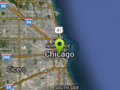

Search for a location by name, calculates best position and zoom to show it.
Usage instructions:
Add this script to map GameObject.
Add this script to map GameObject.
FindLocationExample.cs
/* INFINITY CODE 2013-2016 */
/* http://www.infinity-code.com */
using UnityEngine;
namespace InfinityCode.OnlineMapsExamples
{
[AddComponentMenu("Infinity Code/Online Maps/Examples (API Usage)/FindLocationExample")]
public class FindLocationExample : MonoBehaviour
{
/// <summary>
/// Add marker at first found location.
/// </summary>
public bool addMarker = true;
/// <summary>
/// Log Google Geocode API response.
/// </summary>
public bool logResponse = true;
/// <summary>
/// Set map position at first found location.
/// </summary>
public bool setPosition = true;
/// <summary>
/// Set best zoom at first found location.
/// </summary>
public bool setZoom = true;
private void Start()
{
// Start search Chicago.
OnlineMapsGoogleAPIQuery query = OnlineMapsFindLocation.Find("Chicago");
// Specifies that search results should be sent to OnFindLocationComplete.
query.OnComplete += OnFindLocationComplete;
}
private void OnFindLocationComplete(string result)
{
// Log Google Geocode API response.
if (logResponse) Debug.Log(result);
// Get the coordinates of the first found location.
Vector2 position = OnlineMapsFindLocation.GetCoordinatesFromResult(result);
if (position != Vector2.zero)
{
// Create a new marker at the position of Chicago.
if (addMarker) OnlineMaps.instance.AddMarker(position, "Chicago");
// Set best zoom
if (setZoom)
{
// Load response XML
OnlineMapsXML xml = OnlineMapsXML.Load(result);
// Get bounds node
OnlineMapsXML bounds = xml.Find("//geometry/viewport");
if (!bounds.isNull)
{
// Get corners nodes
OnlineMapsXML southwest = bounds["southwest"];
OnlineMapsXML northeast = bounds["northeast"];
// Get coordinates from nodes
Vector2 sw = OnlineMapsFindLocation.GetVector2FromNode(southwest);
Vector2 ne = OnlineMapsFindLocation.GetVector2FromNode(northeast);
// Get best zoom
Vector2 center;
int zoom;
OnlineMapsUtils.GetCenterPointAndZoom(new[] {sw, ne}, out center, out zoom);
// Set map zoom
OnlineMaps.instance.zoom = zoom;
}
}
// Set map position
if (setPosition) OnlineMaps.instance.position = position;
}
else
{
Debug.Log("Oops... Something is wrong.");
}
}
}
}